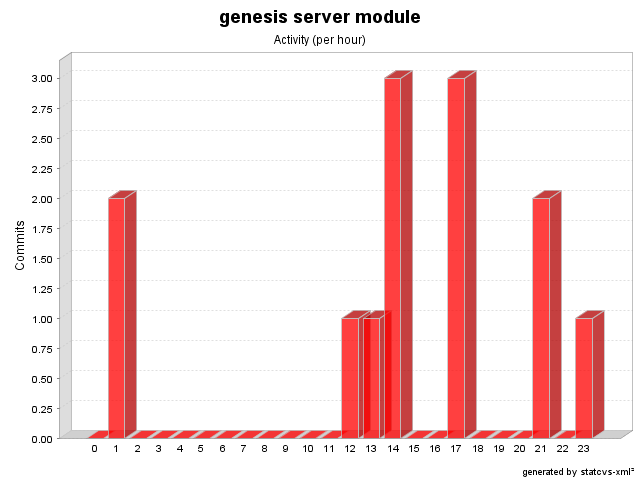

| Month | Author | Score |
|---|---|---|
| August 2004 | sol | 100.0 |
| September 2004 | mister__m | 100.0 |
| May 2005 | mister__m | 100.0 |
| December 2005 | allanjones | 100.0 |
| February 2007 | allanjones | 100.0 |
| July 2008 | hmichel | 100.0 |
| Author | Revisions | Lines of Code | Added Lines of Code | Lines of Code per Change |
|---|---|---|---|---|
| sol | 4 (30.8%) | 106 (30.3%) | 166 (33.8%) | 26.50 |
| mister__m | 3 (23.1%) | 131 (37.4%) | 203 (41.3%) | 43.67 |
| hmichel | 3 (23.1%) | 1 (0.3%) | 7 (1.4%) | 0.33 |
| allanjones | 3 (23.1%) | 112 (32.0%) | 115 (23.4%) | 37.33 |
